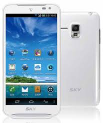
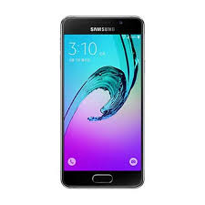

| First Name | Last Name | Points |
|---|---|---|
| Jill | Smith | 50 |
| Eve | Jackson | 94 |
| Time Table | |||||
|---|---|---|---|---|---|
| Hour | Mon | Tue | Wed | Thu | Fri |
| Science | Maths | Science | Maths | Arts | |
| Social | History | English | Social | Sport | |
| Lunch | |||||
| Science | Maths | Science | Maths | Project | |
| Social | History | English | Social | ||
| 브라우저라고 불리기도 하는 웹 브라우저(Web Browser)는, 사용자에게 웹 서버 컴퓨터에 접속하고 웹 페이지, 이미지, 동영상, 음악등 다양한 데이터 다운받아 보여주는 소프트웨어이다. 그림 1-2는 대표적인 Chrome 웹 브라우저를 보여준다. | |
| 웹 페이지는 브라우저에 HTML5 문서임을 알리기 위해 그림 1-3과 같은 코드를 첫 라인에 삽입하여야 한다. |
|
|  |  |